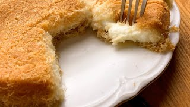
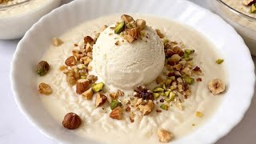
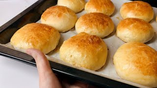
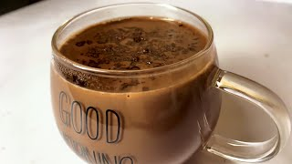

Emma's Kitchen is a popular YouTube cooking show hosted by Emma Weymouth , the Marchioness of Bath. Filmed inside the historic Victorian kitchen at the Longleat estate, the program blends rich history with culinary arts. Emma showcases centuries-old recipes, performs live demonstrations, and crafts delicious dishes using traditional methods. and shares her love for cooking with us all.. here is some of most viewed recipies

1) Kunafa with cream recipe simple and easy Arabic dessert.
Kunafa cream recipe, kunafa recipe
Ingredients :-
· 500 grams of Kunafa
· 1/2 cup of ghee
· Cream Ingredients
· 4 tablespoons of starch
· 3 cups of milk
· Sugar syrup Ingredients
· 1 1/2 cups of sugar
· 1/2 cup of water
· 1 tablespoon of lemon juice

2) Egyptian rice pudding recipe creamy and simple.
Egyptian Rice Pudding (Riz Bel Laban)
A classic creamy dessert made with rice, milk, and sugar, slowly cooked until thick and smooth.
Served chilled and often topped with cinnamon or nuts.

3) Fluffy Cheese Buns – No Milk, No Butter!
Make these soft and fluffy cheese buns with simple pantry ingredients!
This easy cheese buns recipe is made without milk and without butter, yet the buns come out super soft, light, and delicious.
Perfect for breakfast, snacks, or school lunch.
These homemade cheese rolls are so simple to prepare — knead, shape, fill, and bake!
If you love soft bread, fluffy buns, and easy bread recipes, you will definitely enjoy this one.**
Ingredients:
Flour, water, yeast, oil, egg, cheese, salt, sugar
Try these fluffy cheese buns and enjoy the perfect golden, soft bread!

4) Creamy Hot Chocolate Recipe | Ready in 5 Minutes
Make this creamy and delicious hot chocolate in just 5 minutes!
This cozy winter drink is smooth, rich, and so easy to make at home with simple ingredients.
Perfect for cold days, holiday seasons, or whenever you’re craving a warm chocolate treat.
Enjoy a café-style hot chocolate that’s ready in minutes and tastes amazing every time! ❄️🍫
Made by DDenre